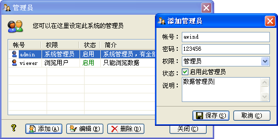
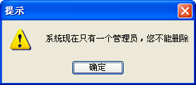

| 管理员 |
|
您以系统管理员登录系统后，可以对管理员进行操作，其在菜单的[系统(S)]->[管理员]中，界面如下：  您可以在这里添加管理员，或对已有的管理员进行编辑、删除等操作。 添加、编辑管理员时，会弹出其对应对话框，您可以在其中完成添加、编辑操作；用户名不能与已有的管理员重复，否则更新不成功。 当您对管理员进行删除操作，只剩下最后一个管理员时，则其自动升级为系统管理员，且不能再删除。  管理员权限分为系统管理员、管理员及浏览用户三类，下面说一下其区别： 系统管理员：拥有系统的全部权限。 管理员：拥有除[系统]->[管理员]、[数据维护]->[初始化]、及[帮助]->[日志]之外的全部权限。 浏览用户：拥有最少的权限。所有的档案数据，不能进行添加、编辑及删除操作。 |